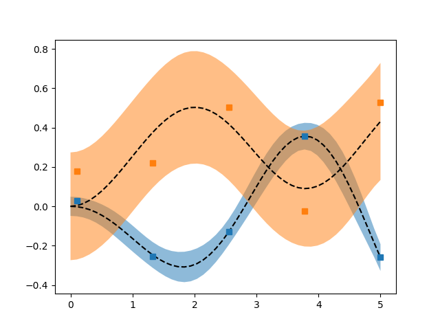

Note
Click here to download the full example code
Latent Force Models¶
import numpy as np
import matplotlib.pyplot as plt
from pydygp.kernels import LFMOrder2Kernel, WhiteKernel
from pydygp.gaussian_process import MultioutGaussianProcessRegressor
C = [-0.2, 0.4] #
D = [1.65, .7] #
S = [-.25, .5] # vectorisation of sensitivity matrix
# lfm kernel + direct sum of white noise kernels for each dimension
kernel = LFMOrder2Kernel(C=C, D=D, S=S) + \
WhiteKernel(1e-3) @ WhiteKernel(1e-2)
# some time points
tt = np.linspace(0.1, 5., 5)
# construct the GP Regression model
lfm = MultioutGaussianProcessRegressor(kernel)
# Sample from it...
y = lfm.sample_y(tt[:, None], n_samples=1, random_state=2)
# ... and then fit
lfm.fit(tt[:, None], y)
# dense set of time points
ss = np.linspace(0., tt[-1])
Ey, SDy = lfm.predict(ss[:, None], return_std=True)
# Unvectorise the output
Ey = Ey.reshape(2, ss.size).T
SDy = SDy.reshape(2, ss.size).T
fig, ax = plt.subplots()
for i in range(2):
ax.fill_between(ss, Ey[:, i] + 2*SDy[:, i], Ey[:, i] - 2*SDy[:, i],
alpha=0.5)
ax.plot(ss, Ey[:, i], 'k--')
ax.plot(tt, y.reshape(2, tt.size).T, 's')
plt.show()
Total running time of the script: ( 0 minutes 0.236 seconds)